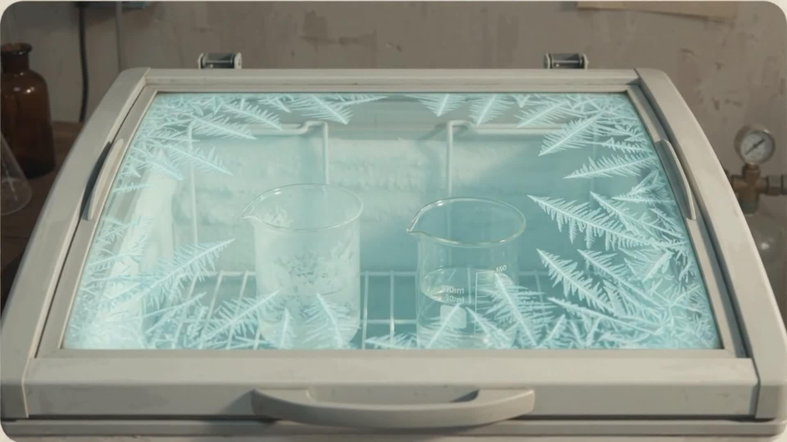

CHAPTER 02
THE VISITOR
Magamba
Usambara Mountains
Mkwawa High School
Iringa
University College
Dar es Salaam
Indian Ocean
a few years later…
Approximate positions
35 °C
100 °C
"Why does the hot one freeze first?"
?
His question, as quoted in the 1969 paper
mistaken?
?
let's test it
right
wrong

University College, Dar es Salaam · recreation
PHYSICS EDUCATION
1969
Cool
?
Mpemba & Osborne
Recreation · not a facsimile of the original page
SCRATCH VO